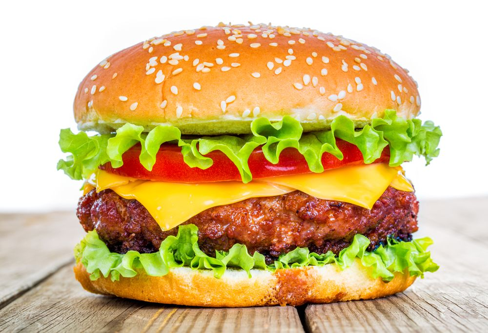

Hamburger Recipe
Back to recipe list

Juicy, flavorful, and endlessly customizable, the hamburger is a timeless staple in home kitchens and backyard cookouts alike. Crafting the perfect burger starts with high-quality ingredients and just the right technique—from seasoning the beef to assembling it with your favorite toppings on a toasted bun. This recipe guides you through building a classic hamburger that’s both satisfying and easy to make, giving you the freedom to elevate it with your own twist. Fire up your skillet or grill—it’s burger time.
Ingredients
- 1 lb (450g) ground beef (80/20 lean-to-fat ratio recommended)
- Salt and freshly ground black pepper to taste
- 4 hamburger buns
- 4 slices of cheddar cheese (optional)
- 1 tablespoon vegetable oil or butter for cooking
- Lettuce leaves
- Tomato slices
- Red onion slices
- Dill pickle slices
- Ketchup, mustard, and mayonnaise
Instructions
- Divide the ground beef into 4 equal portions and gently shape into patties about ¾ inch thick. Make a slight indentation in the center of each patty to prevent puffing during cooking.
- Season both sides of each patty with salt and freshly ground black pepper.
- Heat a skillet or grill over medium-high heat. Add oil or butter if using a skillet.
- Cook the patties for 3–4 minutes on the first side. Flip and cook another 3–4 minutes for medium, or adjust time based on desired doneness.
- If using cheese, place a slice on each patty during the last minute of cooking and cover to melt.
- Lightly toast the hamburger buns on the skillet or grill for 1–2 minutes until golden.
- Assemble the burgers: place the cooked patty on the bottom bun and layer with lettuce, tomato, onion, pickles, and your preferred condiments.
- Top with the remaining bun half, serve immediately, and enjoy your homemade hamburger.